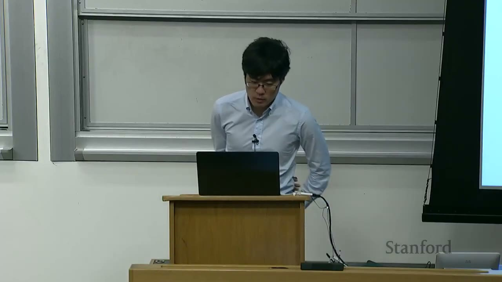
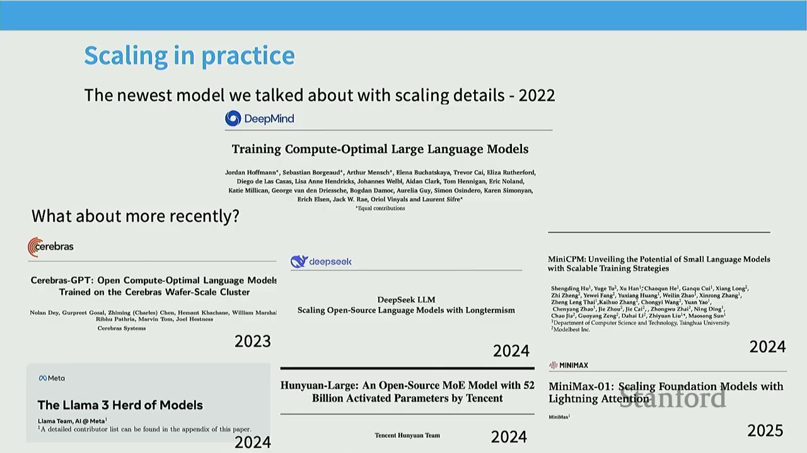
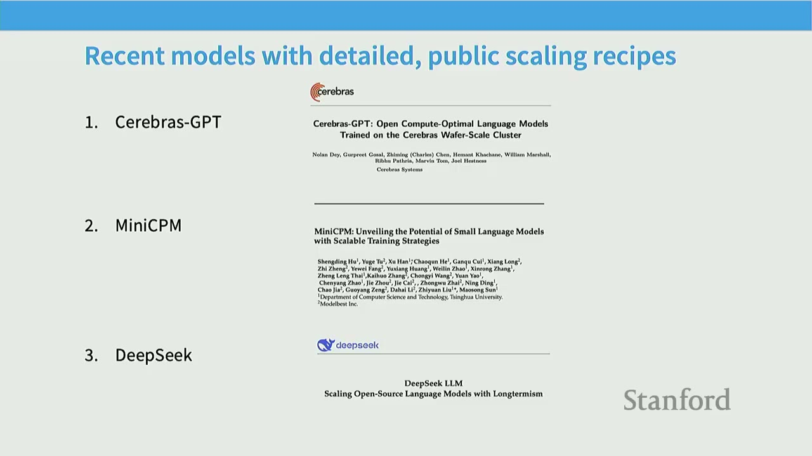
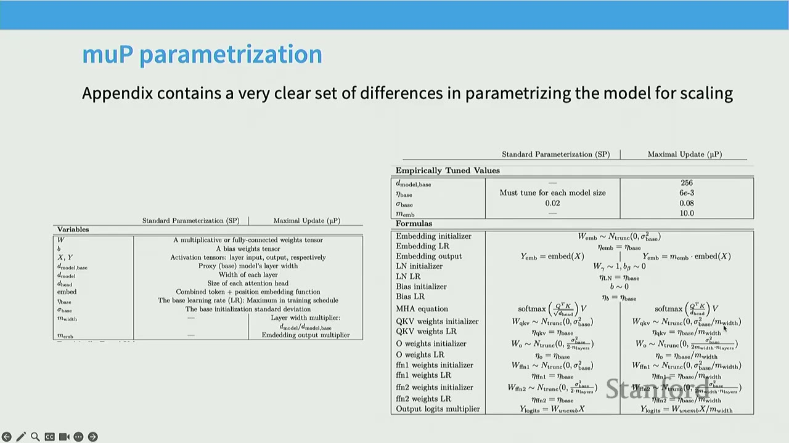
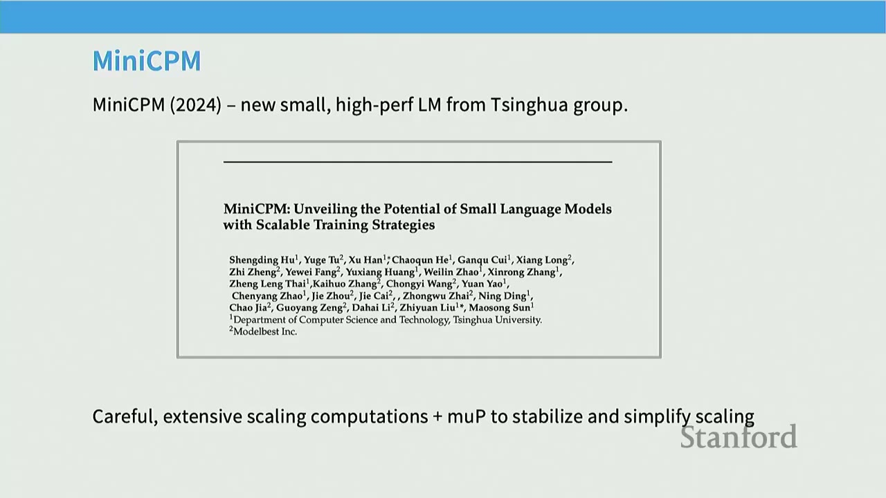
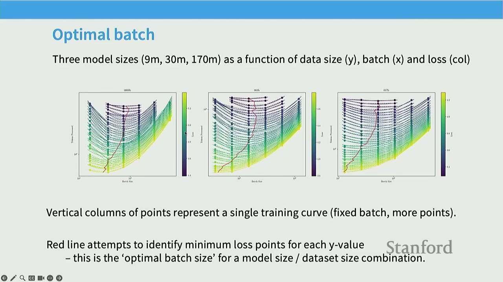
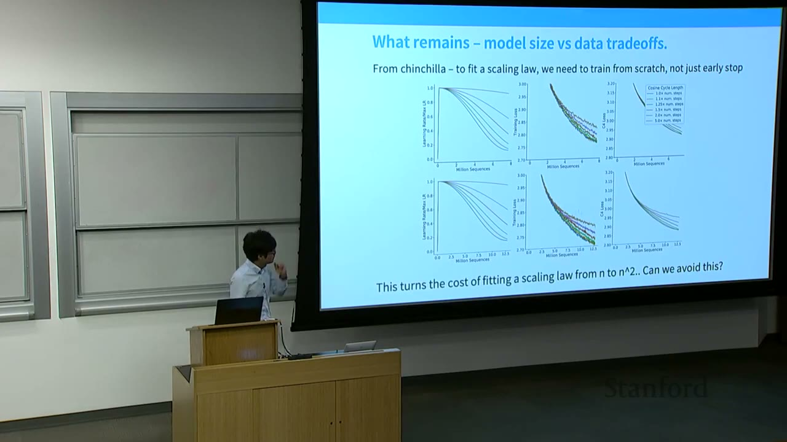
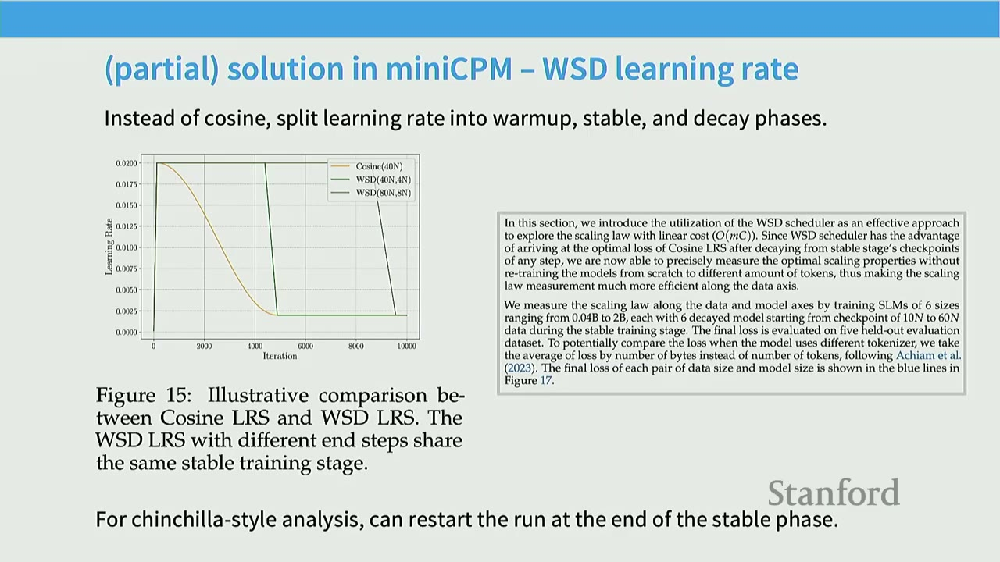
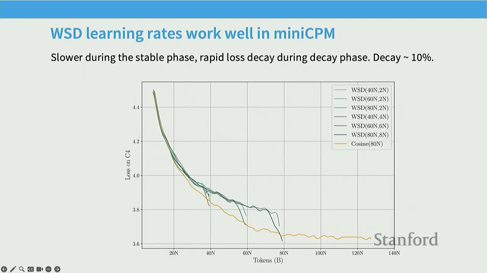

Lecture 11: Scaling Laws 2
These are comprehensive notes from the lecture.
TL;DR
- Scaling Laws in Practice: Modern large language model (LLM) builders use scaling laws as a core part of their design process, but the details of these studies are often kept proprietary.
- MUP for Hyperparameter Stability: The Maximum Update Parameterization (MUP) aims to keep optimal hyperparameters (like learning rates) stable across different model scales, simplifying the search process.
- WSD Learning Schedules: Warm-up Stable Decay (WSD) learning rate schedules, often trapezoidal, allow for efficient data scaling analysis by enabling the reuse of stable training phases for different data budgets.
- Chinchilla Replications: Several recent works (Llama 3, Hunyuan-1, Minimax-01) replicate Chinchilla-style scaling laws, often finding different optimal token-to-parameter ratios, suggesting that the original 20:1 ratio is not a universal constant.
- Challenges in Scaling: Key challenges in scaling LLMs include setting model architecture hyperparameters (width, depth), optimizing hyperparameters (learning rate, batch size), and managing the compute needed for extensive scaling law sweeps.
Key Concepts
- MUP (Maximum Update Parameterization)
- WSD (Warm-up Stable Decay) Learning Schedules
- Chinchilla Scaling Laws
- IsosFlop Curves
- Data-to-model Ratio
- Hyperparameter Stability
- Activation Norms
- Weight Decay
- Exotic Optimizers
[0:00] Introduction: Scaling Laws in Practice


Today's lecture is the second and last on scaling laws. It will be a case study and details-oriented lecture, covering two main topics: 1. Case Studies: Examining how modern LLM builders use scaling laws in their design process, looking at specific papers. 2. MUP Deep Dive: A detailed look into the MUP parameterization method.
The motivation is to understand the best practices for scaling large language models, specifically how to choose hyperparameters and architecture effectively. While Chinchilla introduced scaling laws, there's a healthy skepticism about how robust these findings are in practice.
After the DeepMind Chinchilla paper in 2022, the landscape of LLM development became very secretive, with companies stopping publications on data and scaling. However, some competently executed large-scale models have still shared their scaling insights.
Recent Models with Scaling Insights: - Cerebras-GPT (2023): Open Compute-Optimal Language Models - DeepSeek LLM (2023): Scaling Open-Source Language Models with Longtermism - MiniCPM (2024): Unveiling the Potential of Small Language Models with Scalable Training Strategies - Llama 3 (2024): The Llama 3 Herd of Models - Hunyuan-Large (2024): An Open-Source MoE Model with 100 Billion Activated Parameters by Tencent Team - Minimax-01 (2024): Scaling Foundation Models with Longtermism
The newer models (Llama 3, Hunyuan-Large, Minimax-01) have sparser scaling law insights compared to DeepSeek and MiniCPM, which are considered gold standards for detailed scaling studies.
[3:22] MUP: Maximum Update Parameterization
MUP is an approach designed to address the challenge of hyperparameter tuning when scaling models.
Problem: When training models, as they get larger (e.g., wider MLPs), the optimal learning rate often shifts downwards. This means hyperparameters need to be re-tuned for larger models, which is computationally expensive.
MUP Solution: If models could be parameterized differently such that the optimal learning rate (and other hyperparameters) remains stable across scales, it would greatly simplify the design process. MUP aims to achieve this by ensuring scale-invariance in hyperparameters.
[5:07] Recent Models and Scaling Recipes
The first part of the lecture focuses on three models with detailed scaling recipes: CerebrasGPT, MiniCPM, and DeepSeek.
[5:41] CerebrasGPT: MUP for Stable Scaling







CerebrasGPT trained a family of models (0.1 to 13 billion parameters) using the Chinchilla recipe. Their core finding is that using MUP makes scaling much more stable and pleasant to deal with.
Core Finding: MUP parameterization makes scaling more stable. - Plot Analysis: The plot shows test loss on the Pile dataset versus training FLOPs. - Blue line (Cerebras-GPT): Standard parameterization. - Orange line (Cerebras-GPT MUP): MUP parameterization. - MUP models (orange) show better scaling behavior, often outperforming or matching Pythia and GPT-J.
Hyperparameter Scaling Strategy: - CerebrasGPT authors found more predictable scaling from MUP parameterization. - Standard Parameterization: When using standard parameterization, there are significant oscillations around the predicted scaling law (dashed line), making it hard to achieve the expected performance. This is due to the need to adjust learning rates with scale. - MUP Parameterization: With MUP, the orange line (MUP scaling) is much closer to the predicted scaling law, indicating more stable and predictable scaling. - Importance of MUP: MUP is crucial because it allows hyperparameters (initialization, per-layer learning rates) to remain stable across scales, reducing the need for expensive re-tuning. This is a key practice in frontier labs (e.g., Llama 4 uses "MetaP," a MUP variant). - MUP Parameterization Details: The CerebrasGPT paper provides a detailed appendix (Table 2) outlining the differences between Standard Parameterization (SP) and MUP. - Key Difference: In MUP, every non-embedding parameter is initialized with $1/\text{width}$, and per-layer learning rates are scaled down by $1/\text{width}$. This contrasts with SP, where initialization might use $1/\sqrt{\text{width}}$ and learning rates are global. - Setting Empirical Values: MUP is combined with aggressive scaling for hyperparameter search and $\mu$Transfer to optimize hyperparameters. - They scale down experiments to 40 million parameters, perform extensive hyperparameter search on this proxy model, and then scale up using MUP to keep hyperparameters stable. - The plots (Figure 13) show validation loss for different hyperparameters. MUP helps keep hyperparameters generally stable. - This strategy (training small surrogate models and then scaling up) is also seen in MiniCPM and DeepSeek.
[1:00:00] MiniCPM: Unveiling the Potential of Small Language Models
MiniCPM (2024) is a new, high-performance LLM from Tsinghua group. - Goal: Train relatively small language models using a lot of compute to achieve high performance. - Approach: Careful scaling computations and MUP to stabilize and simplify scaling. - Performance: MiniCPM models (1.2B to 2.4B parameters) were remarkably good at the time of their release, beating most 2B models and matching many modern 7B models (Figure from MiniCPM paper). This indicates they did something right at the frontier.
Technique 1: MUP to Stabilize Scaling
- MiniCPM uses the same MUP strategy as CerebrasGPT (Table 7).
- Key Idea: Pick hyperparameters at a small scale, hope they stay stable, and then scale everything up. MUP helps ensure this stability.
- Similarities: The scaling factors and parameters (e.g., scale_emb, scale_depth, init_std, lr) are very similar to CerebrasGPT.
Scaling Recipe / Strategy: - Use MUP for initialization, fix the aspect ratio, and scale up the overall model size. - Model Parameters (Table from MiniCPM): Shows how model dimensions ($D_m$, $N_h$, $D_{ff}$, $N_l$) are scaled. - Compute Savings: This approach offers roughly 5x compute savings by allowing efficient scaling from smaller pilot models to larger ones.
Optimal Batch Size: - MiniCPM also analyzes optimal batch sizes, similar to the Kaplan paper. - Plot Analysis (Figure 12): Shows training loss for three model sizes (9M, 30M, 170M) as a function of data size (y-axis), batch size (x-axis), and columns (col). - Vertical columns represent single training curves (fixed batch, more points). - Red lines identify minimum loss points for each y-value, representing the "optimal batch size" for a model size/dataset size combination. - Critical Batch Size: The critical batch size is the point of diminishing returns. As models get bigger and losses get lower, larger batch sizes can be used. - Optimal Batch Size Plot (Figure 13): Shows log(Batch Size) vs. Loss. - A fairly clean trend: polynomially increase the batch size as loss decreases. - This allows predicting the optimal batch size for a given target loss (which can be derived from scaling laws).
Optimal Learning Rate (LR): - According to MUP, optimal learning rate should be (roughly) stable. - Plot Analysis (Figure 3): Shows loss vs. learning rate for different model sizes (0.06B to 2.1B). - The minimum loss (optimal learning rate) remains fixed across relatively large orders of magnitude (from small to big models, the minimum is at $10^{-2}$). - Validation: This provides evidence that properly scaling model initialization and per-layer learning rates allows avoiding extensive learning rate tuning or fitting scaling laws on learning rates.
What Remains – Model Size vs. Data Tradeoffs: - To fit a Chinchilla scaling law, one needs to train from scratch, not just early stop. This turns the cost of fitting a scaling law from $N$ to $N^2$. Can this be avoided? - Problem with Cosine Learning Schedules: If you use a cosine learning rate schedule, early checkpoints (less data) will have different optimal learning rates than later checkpoints (more data). This means you cannot simply use one long training run and extract checkpoints to analyze data scaling; you need to train separate models for each data budget.
Partial Solution in MiniCPM – WSD Learning Rate: - Instead of cosine, split learning rate into warm-up, stable, and decay phases. - WSD Scheduler (Figure 15): A trapezoidal learning rate schedule with a warm-up phase, a stable phase (flat learning rate), and a rapid decay phase. - Advantage: The stable phase can be reused. To analyze data scaling, you warm up, run the stable phase to the end, and then rewind checkpoints to perform different decay phases. This allows fitting Chinchilla-style scaling laws with mostly a single training run. - WSD Learning Rates Work Well (Figure 16): - Cosine learning rate schedules (yellow) show predictable, smooth decay. - WSD schedules (darker lines) show a slower decay during the stable phase, followed by a rapid drop during the decay phase (typically 10% of total steps). - At every token count, the minimum loss achieved by WSD schedules is comparable to or better than cosine schedules. - WSD provides the advantage of efficient data scaling analysis.
Side Note – Other Ways of Estimating Chinchilla Curves: - Gadre et al. propose other curve-fitting based ways of doing similar things. - Core Idea: The "penalty" from overtraining remains stable. This means you can extrapolate the excess token penalty from smaller training runs to estimate Chinchilla curves. - This approach hasn't been widely adopted for large-scale training.
Chinchilla-type Analysis:
- Equipped with the WSD learning rate, MiniCPM can now try to find the optimal data-to-model size ratio.
- They fit the losses with model size N and data size D (Hoffmann et al. 2022) using scipy.curve_fit.
- They use method 1 (lower envelope) and method 3 (joint fit) from the Chinchilla paper.
Chinchilla Method 1 (Figure 17): - Fairly clear (though maybe not linear?) trends. - Different colors indicate different models. Their runs suggest relatively low diminishing returns due to data.
Chinchilla Method 3 (Figure 18): - Their primary scaling approach is the joint fit. They find very high data-model ratios. - Tiny Models with Lots of Data: The overall data-to-model ratio is very high (192), though they argue Llama architectures should have a higher ratio. - MiniCPM's optimal data-to-model ratio ($D_{opt}/N_{opt}$) is 192, compared to Hoffmann et al.'s (2022) 20. - Recent models like Llama 3 have significantly higher data-to-model ratios, suggesting that with careful optimization, we might be able to go far beyond the 20x model_size rule of thumb. - Takeaway: The Chinchilla analysis isn't a strong constraint; 20x model size is just a starting point. It's possible to significantly increase the token-to-parameter ratio.
Scaling Curve Fits are Generally Good (Figure 19): - Overall fits and predictions of models across a large range of sizes is fairly good. - X-axis: number of tokens in billions.
[1:31:00] DeepSeek: Another LLM with Careful Scaling Analysis
DeepSeek (2024) is another LLM with careful scaling analysis. - Models: 7B and 67B parameter models. - Performance: Generally high performance compared to other open LLMs. Roughly comparable to Llama 2 models of equivalent size (Table from DeepSeek paper). - DeepSeek's Approach: Very open about their experimental approach.
Scaling Strategy – Batch + LR: - DeepSeek does not use MUP. They directly estimate optimal batch size and learning rate. - Method: They compute a grid of loss for batch size and learning rate on small-scale experiments (177M FLOPs/token). - Plot Analysis (Figure 2): Shows loss landscapes for 1.17e17 FLOPs/token and 2.94e18 FLOPs/token. - The generalization error remains stable across a wide range of choices of batch sizes and learning rates. - This indicates that near-optimal performance can be achieved within a relatively wide parameter space. - Learning Rate Scaling (Figure 3): - They train a bunch of models with different non-embedding training FLOPs. - They vary batch size and learning rate across a grid. - They then plot optimal batch size vs. FLOPs and optimal learning rate vs. FLOPs. - Batch Size Scaling Curve: Shows a clear scaling law for optimal batch size. - Learning Rate Scaling Curve: Shows a scaling law for optimal learning rate, though the fit looks "a bit questionable" (as noted by the lecturer). - Strategy: Extrapolate these scaling laws to determine optimal batch size and learning rate for larger models.
Chinchilla Analysis: WSD-Style Learning Rate: - DeepSeek uses WSD-style learning rate (fast warm-up + two decay steps of 10% each). - Plot Analysis (Figure 4): Compares training loss for multi-step vs. cosine learning rate decay. - Generally seems to match performance of cosine learning rates. - The advantage is that WSD allows for efficient Chinchilla-style analysis (data scaling) by reusing the stable phase and re-cooling down from checkpoints. - DeepSeek uses two decay steps (10% + 10%) for their WSD schedule.
Data-size Tradeoff Analysis: Chinchilla Method 2: - Straightforward isoflop-style analysis for selecting model size tradeoffs. - Plot Analysis (Figure 5): - IsosFlop Curve: Bits-per-byte on validation set vs. non-embedding FLOPs/token. Shows the characteristic U-shaped curves for different compute budgets. - Optimal Model Scaling: Non-embedding FLOPs/token vs. training FLOPs. Shows a linear relationship on a log-log plot. - Optimal Data Scaling: Tokens vs. training FLOPs. Shows a linear relationship on a log-log plot. - This is a replication of the Chinchilla result, providing a straightforward way to analyze token-to-model size tradeoffs. - DeepSeek's optimal token-to-parameter ratio is 192, which is significantly higher than the 20:1 ratio from Chinchilla. This is an outlier compared to most other literature. - Takeaway: The Chinchilla analysis is not a strong constraint. 20x model size is just a starting point. Recent models like Llama 3 have significantly higher data-to-model ratios.
Scaling Predicts Final Model Loss (Figure 6): - The fitted scaling models (generally) accurately predict the final model loss. - DeepSeek used small-scale experiments to predict the compute budget $C$ and optimal generalization error for their 7B and 67B LLMs. - The results indicate that small-scale experiments can accurately predict well-trained models. They extrapolate from $10^{20}$ to $10^{24}$ FLOPs and accurately predict the performance of their 7B and 67B models.
[1:59:00] Llama 3 (2024) Scaling Laws
Llama 3 is a recent large model release with interesting scaling bits. - IsosFlops-style Scaling (Figure 2, left): They redo the IsosFlops-style scaling analysis. - They find an optimal ratio of 39:1 (token-to-parameter). This is higher than Chinchilla's 20:1. - This suggests that the 20:1 ratio isn't stable and can vary with architectural improvements, data quality, or other factors. - Compute-to-downstream Scaling (Figure 2, right): - They correlate compute (FLOPs) to normalized NLL per character. - They then correlate NLL per character to downstream accuracy (e.g., MMLU, Lambada). - This allows them to predict downstream performance based on compute, essentially mapping compute to accuracy. - They fit a sigmoid curve to relate NLL to accuracy, showing that they can accurately predict Llama 3 405B's performance based on smaller models.
[2:08:00] Hunyuan-1 (2024) Large Scaling Laws
Hunyuan-1 is another recent Chinese LLM. - MoE Scaling: They are training Mixture-of-Experts (MoE) models. - IsosFlops-style Scaling (Figure 3): They redo the Chinchilla-style analysis for MoE models. - They fit quadratics to training loss vs. activated parameters for different compute budgets. - They find an optimal ratio of 96:1 (data-to-active parameter). This is different from Chinchilla due to the MoE architecture. - Takeaway: Replications of Chinchilla are common because researchers want to understand how far they can push the token-to-parameter ratio, aiming for higher ratios (more data per parameter) for cheaper inference.
[2:10:00] Minimax-01 (2025) Large Scaling Laws
Minimax-01 is a linear-time or long-context LLM from another Chinese startup. - Architecture Scaling + Chinchilla Method 1 (Figure 6): - They compare Softmax Attention (quadratic), Lightning Attention (linear-time), and Hybrid-Lightning Attention. - They use Chinchilla Method 1 (lower envelope of loss curves) to analyze performance. - Conclusion: Their linear and hybrid models perform similarly to Softmax Attention, justifying their use for training long-context models. - This type of plot is common in papers introducing new efficient architectures (e.g., Mamba), showing that the new architecture performs comparably to standard attention as a function of compute.
[2:15:00] Recent Scaling Recipes (Recap)
CerebrasGPT: - Uses MUP to make hyperparameters invariant to scale. - Uses the Chinchilla scaling formula.
DeepSeek: - Assumes most transformer hyperparameters are invariant to scale. - Does a scaling analysis on batch size/LR to figure out optimal scaling. - Uses IsosFlop analysis to figure out model sizing. - Uses a piecewise-linear schedule to make Chinchilla scaling cheap.
MiniCPM Recipe: - Uses MUP to make transformer + LR invariant to scale. - Uses a piecewise linear schedule to get sample for Chinchilla method 3 (curve fitting).
Llama 3 / Hunyuan: - Just IsosFlops (no other scaling details). - Recent (late 2024+) but less detailed.
Minimax: - Architecture choice / decision scaling.
General Observations: - Learning rate and batch size are key concerns in scaling. - Fixing aspect ratio and scaling total model size is a common strategy.
[2:22:00] Validating and Understanding MUP
Goal: Scale-invariant hyperparameter tuning would be very useful. - Plot Analysis (Figure from MUP paper): Shows training loss vs. log(learning rate). - Standard Practice (left): Optimal learning rates shift as model width increases. - Our Work (right): With MUP, optimal learning rates remain stable across different model widths. - CerebrasGPT and MiniCPM also use MUP. Is it actually useful? - A preprint by Lucas Dax Lingle, "A Large-Scale Exploration of $\mu$-Transfer," provides extensive ablations on MUP.
[2:29:00] What is MUP, Anyway?
MUP is based on the following assertions (from "A Spectral Condition for Feature Learning" by Yang et al.): - A1: The activations at initialization should remain $\Theta(1)$ (constant, not blowing up or vanishing), as a function of the width of the network $n_l$. - A2: After one gradient step, the change in activation should be $\Theta(1)$. - Norm Note: If individual activations are $\Theta(1)$, then the norm should be $\Theta(\sqrt{n_l})$.
[2:44:00] Deriving MUP (Condition A1)
Let's derive MUP from these two conditions using a simple example.
Setup: - Consider a deep, simple linear network: $h_l = W_l h_{l-1}$. - Initialize $W_l \sim \mathcal{N}(0, \sigma_l^2/n_{l-1} I_{n_l} \times n_{l-1})$. This is a Gaussian initialization with variance $\sigma_l^2/n_{l-1}$. - Basic matrix concentration implies that the operator norm of $W_l$ concentrates around $\sigma_l \sqrt{n_l + n_{l-1}}$.
Goal: We want the norm of $h_l$ at initialization to be $\Theta(\sqrt{n_l})$.
Derivation: 1. Inductive Assumption: Assume that for layer $l-1$, the norm of $h_{l-1}$ is $\Theta(\sqrt{n_{l-1}})$. 2. Inductive Case: We need to show that the norm of $h_l$ is $\Theta(\sqrt{n_l})$. - The norm of $h_l$ is approximately $\|W_l\| \cdot \|h_{l-1}\|$. - Substitute the matrix concentration limit for $\|W_l\|$ and the inductive assumption for $\|h_{l-1}\|$. - So, $\|h_l\| \approx \sigma_l \sqrt{n_l + n_{l-1}} \cdot \Theta(\sqrt{n_{l-1}})$. 3. Choosing $\sigma_l$: To make $\|h_l\| = \Theta(\sqrt{n_l})$, we need to choose $\sigma_l$ carefully. - Let's pick $\sigma_l = \frac{\sqrt{n_l}}{\sqrt{n_{l-1}}} \cdot \frac{1}{\min(1, \sqrt{n_l/n_{l-1}})}$. - This simplifies to $\sigma_l = \frac{1}{\sqrt{n_{l-1}}}$ if $n_l \ge n_{l-1}$ (fan-out over fan-in). - This simplifies to $\sigma_l = \frac{1}{\sqrt{n_l}}$ if $n_l < n_{l-1}$ (fan-in over fan-out). 4. Result: With this choice of $\sigma_l$, plugging it back into the approximation for $\|h_l\|$, we get $\|h_l\| = \Theta(\sqrt{n_l})$, plus some lower-order terms.
Conclusion for Condition A1: For initializations, we should pick $\sigma_l = \frac{1}{\sqrt{n_{l-1}}}$ (plus a small correction factor) to ensure activations do not blow up at initialization. This is roughly $1/\sqrt{\text{fan-in}}$.
[2:59:00] Deriving MUP (Condition A2)
Now we deal with updates. The second part of MUP is about learning rates. - Goal: After one gradient step past initialization, the change in activation should be $\Theta(1)$. This means the update size shouldn't blow up or vanish. - Update Rule: For SGD on a linear layer, the update to weights $\Delta W_l$ is a rank-one outer product: $\Delta W_l = -\eta_l \nabla_l L \cdot h_{l-1}^T$. - Change in Activation: The change in activation at layer $l$ is $\Delta h_l = \Delta W_l h_{l-1} + W_l \Delta h_{l-1} + \Delta W_l \Delta h_{l-1}$. - Simplification: Assuming that the leading order terms don't cancel, we see that: - $\|W_l \Delta h_{l-1}\| = \Theta(\sqrt{n_l})$ from the inductive assumption and condition A1 argument. - $\|\Delta W_l h_{l-1}\| = \Theta(\sqrt{n_l})$ from above. - $\|\Delta W_l \Delta h_{l-1}\| = O(\sqrt{n_l})$. - Key Insight: We need to figure out how big $\Delta W_l$ is. This is the product of the previous layer's norm times the operator norm of $\Delta W_l$. - Loss Change: The change in loss $\Delta L$ should also be $\Theta(1)$ (constant, not blowing up or vanishing). - $\Delta L \approx \langle \nabla_l L, \Delta W_l \rangle$. - We know $\Delta W_l = -\eta_l \nabla_l L \cdot h_{l-1}^T$. - Substituting and solving for $\eta_l$, we get $\eta_l = \frac{n_l}{n_{l-1}}$.
Conclusion for Condition A2: For SGD, the learning rate $\eta_l = \frac{n_l}{n_{l-1}}$. This means the learning rate should be scaled by the ratio of fan-out to fan-in.
[3:23:00] MUP Mini Recap
What is MUP about? Controlling activations (and changes) via $W$ and $\Delta W$.
Initialization: Set to $\Theta\left(\frac{1}{\sqrt{\min(n_l, n_{l-1})}}\right)$. - This is $1/\sqrt{\text{fan-in}}$ if fan-out $\ge$ fan-in. - This is $1/\sqrt{\text{fan-out}}$ if fan-out $<$ fan-in.
Learning Rates: - For SGD: Set to $\Theta\left(\frac{n_l}{n_{l-1}}\right)$ (fan-out / fan-in). - For Adam: Set to $\Theta\left(\frac{1}{n_{l-1}}\right)$ (1 / fan-in).
Compared to 'standard' parameterizations: - Initialization: Set to $1/\sqrt{\text{fan-in}}$. - Learning Rates: Set to $\Theta(1)$ (global constant).
Differences: - LR changes for Adam, also init diffs when fanout $n_l <$ fanin $n_{l-1}$.
[3:26:00] Implementation in CerebrasGPT
The CerebrasGPT paper provides a table (Table 2) detailing their MUP implementation. - Embedding Layer: Special case, scaled by $1/\sqrt{n_{emb}}$. - Other Layers: - Initialization: Scaled by $1/\sqrt{n_{in}}$ (fan-in). - Learning Rates: Scaled by $n_{out}/n_{in}$ (fan-out / fan-in). - This aligns with the derived MUP rules.
[3:28:00] What is MUP Robust To?
The paper by Lucas Dax Lingle explores the robustness of MUP. - Question: Modern LLMs have many components that deviate from MUP's theory. Which of these (if any) break MUP? - Variations Tested: - Activations: SwiGLU, squared ReLU. - Batch sizes: Large/small. - Initialization variations: Zero attention, etc. - RMS norm gains. - Exotic optimizers (Lion). - Regularizers.
Robustness to Nonlinearities: - SwiGLU, Squared ReLU have the same optimal LR and both provide minor gains. - The optimal learning rate remains stable across different nonlinearities (SwiGLU, Squared ReLU, ReLU). - This suggests MUP is robust to changes in activation functions.
Robustness to Batch Sizes: - Larger and smaller batches. - The original derivation doesn't handle batch size considerations. - MUP remains robust to varying batch sizes.
Robustness to Initialization: - New initializations are sometimes used. - SP Unembedding: Pre-softmax linear layer. $1/M$ (SP) vs $1/\sqrt{M}$ (MUP). - Zero Query: Set the query matrix to zero (so that all items get uniform attention). - MUP remains robust to these initialization variations.
What MUP is NOT Robust to? RMSnorm gain: - In our arch, RMSnorm has learnable gains. This turns out to break MUP. - If learnable gains are added to RMSnorm, MUP breaks. - However, these gains can be removed with little loss of performance.
What MUP is NOT Robust to? Exotic Optimizers: - There are other, exotic optimizers based on just gradient signs. Do they transfer? - Lion optimizer (which uses the sign of gradients) breaks MUP. - This is expected, as MUP is designed for specific optimizers like AdamW.
What MUP is NOT Robust to? (Strong) Weight Decay: - Strong weight decay (e.g., 0.1) breaks MUP. - This is one of the few significant MUP failures.
[3:30:00] Recap: Scaling in the Wild
Challenges in scaling 'in practice': 1. Setting model architecture hyperparameters (width, etc.). 2. Setting optimizer hyperparameters (LR, batch). 3. Compute needed to fit the big Chinchilla sweep.
Some solutions: 1. Assume stability (or use MUP). 2. Search for optimal LR/batch in small scale, either keep fixed or predict scaling. 3. Use alternative learning schedules (WSD-like).
Practical Takeaways
- MUP for Hyperparameter Management: MUP is a valuable tool for stabilizing hyperparameters across model scales, reducing the computational burden of hyperparameter tuning for large models.
- WSD for Data Scaling: WSD learning rate schedules enable efficient data scaling analysis by allowing the reuse of training runs and rewinding checkpoints, making Chinchilla-style studies more feasible.
- Chinchilla is a Guideline, Not a Law: While Chinchilla-style analyses are widely used, the optimal token-to-parameter ratios can vary significantly across architectures and datasets. The 20:1 ratio is a starting point, not a strict rule.
- Deep Dive into Optimizers: The choice of optimizer (SGD vs. Adam vs. exotic ones) significantly impacts how MUP should be applied, particularly for learning rate scaling.
- Empirical Validation is Key: Despite theoretical derivations, real-world scaling involves many complexities (nonlinearities, regularization, exotic optimizers) that require extensive empirical testing to validate the robustness of scaling laws like MUP.
Open Questions / Things to Remember
- Proprietary Nature of Scaling: The lack of detailed public information from leading labs makes it challenging to understand the current state-of-the-art in scaling practices.
- Robustness of MUP: While MUP offers significant advantages, its robustness to various modern architectural components, optimizers, and regularization strategies needs careful empirical validation.
- Evolving Optimal Ratios: The "optimal" token-to-parameter ratio is not fixed and can change with architectural innovations and data quality, suggesting a need for continuous re-evaluation rather than strict adherence to historical benchmarks.
- Trade-offs in Scaling: There are inherent trade-offs between computational cost, model size, data size, and hyperparameter stability. Effective scaling involves navigating these trade-offs strategically.
- Physics Analogy: The idea of "renormalization" from physics, where one seeks stable properties across different scales, provides a powerful conceptual framework for MUP.